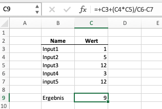

Einführung in Python
Inhalt
Einführung in Python¶
Online-Resourcen
Es gibt im Internet eine Vielzahl an guten Einführungen zum Thema Programmieren in Python.
Hier zwei Beispiele:
Insbesondere zu als Anfänger ist die Menge an Tutorial überwältigend und es fällt schwer zu beurteilen, was davon geeignet und für unsere Zwecke sinnvoll ist. Je mehr Erfahrung und Übung Sie jedoch bekommen, desto einfacher fällt es zielgerichtet im Internet nach Hilfe zu suchen.
Einfache Arithmetik¶
Wie bereits im vorangegangenen Kapitel gesehen, können wir mit Python ganz einfache Berechnungen durchführen
1 + (5 * 12) / 3 - 12
69.44444444444444
Wie man sieht, kann man - analog zu einem Taschenrechner (oder Excel) - die bekannten arithmetischen Operatoren verwenden.
+ = Addition
- = Subtraktion
* = Multiplikation
/ = Division
** = Potenzieren (❗ die Schreibweise für \(3^4\) in Python lautet \(3{**}4\))
Dieses Vorgehen ist jedoch meist nicht sinnvoll und wenig vorteilhaft gegenüber einem Taschenrechner.
Als Analogie können wir uns kurz Excel (oder ein alternatives Tabellenkalkulationsprogramm) vorstellen. Dort schreiben wir auch typischerweise nicht in eine Zelle eine komplette Formel mit fest codierten Werten.
Stattdessen würden sie die Werte auf verschiedene Zellen aufteilen und in einer Ergebniszelle verknüpfen. Dieses Vorgehen hat den Vorteil, dass die Annahmen für das Ergebnis viel transparenter sind. So wird z.B. deutlich, dass es sich bei der \(12\), die in der Berechnung zwei Mal vorkommt um tatsächlich zwei verschiedene Annahmen handelt, die nur zufällig den selben Wert haben.

Zuweisen von Variablen¶
Das Äquivalen in Python ist die Nutzung von Variablen. Wir können Werte als Variablen abspeichern1, in dem wir das “=”-Symbol benutzen.
Wir schreiben also
variable = wert
variable kann hier jeden Namen annehmen2. Für wert können wir Ganzahlen, Dezimalzahlen, Wörter oder auch ganz andere Objekte - z.B. Graphen oder Dataframes die wir teilweise noch kennenlernen werden - einsetzen.
Hier ein paar Beispiele:
zahl = 42
wort = "Spaghetti"
satz = "Deutscher Meister wird nur der BVB"
Namen für Variablen sollten sinnvoll und prägnant (d.h. nicht zu lang) sein. In Python gibt es darüber hinaus die Konvention (siehe PEP 8), dass Variablen klein geschrieben werden und mehrere Wörter mit “_” getrennt werden.
Beispiel:
sehr_wichtige_variabel = 321
Diese Konvention ist für die Funktion eines Programms nicht entscheiden, jedoch erleichtert dies die Lesbarkeit des Codes.
Wir können unser obiges Formelbeispiel also verbessern, in dem wir die Annahmen in verschiedene Variablen speichern und dann miteinander zu einem Ergebnis kombinieren.
input1 = 1
input2 = 5
input3 = 12
input4 = 3
input5 = 12
ergebnis = input1 + (input2 * input3) / input4 - input5
ergebnis
9.0
Beispiel: Berechnung Kapitalbarwert
Lassen Sie uns unser neugewonnenes Wissen direkt mithilfe eines konkreten Anwendungsfalles ausprobieren. Wir wollen berechnen, ob sich eine Investition lohnt. Hierfür haben wir untenstehende Annahmen gegeben:
Investition (\(I_0\)): -10.000
Cashflows (\(CF_t\)) in den Jahren 1 bis 3: 5.000, 4.000 und 3.000
Zinssatz (\(i\)): 4%
Wir suchen den Kapitalbarwert (\(KW_0\)) der Investition und können dies mit untenstehendem Code umsetzen.
I_0 = -10000
CF_1 = 5000
CF_2 = 4000
CF_3 = 3000
i = 0.04
KW = I_0 + CF_1/(1+i)**1 + CF_2/(1+i)**2 + CF_3/(1+i)**3
KW
1172.9062357760577
Die Umsetzung war einfach und hat viele Vorteile gegenüber einer Variante, in der wir keine Variablen nutzen. Jedoch hat der bis hierin vorgestellte Ansatz immer noch relativ viele Nachteile, z.B.:
jeder Cashflow benötigt eine eigene Variable. Bei großen Zahlenreihen ist dies viel manueller Aufwand (und auch fehleranfällig)
die Formel für den Kapitalwert muss für jeden zusätzlichen Cashflow angepasst
Im Folgenden wollen wir versuchen unseren Code Schritt für Schritt zu verbessern bzw. zu optimieren.
Wichtige Regeln in Python¶
[to come]
Einrücken / Leerzeichen haben eine Bedeutung
Lange Zeilen kann ich unterbrechen mit
\oder durch( )Hilfe durch ??
Datentypen¶
Jede Variable kann unterschiedliche Datentypen annehmen. In unseren obigen Beispielen haben wir bereits einige kennengelernt.
Die Variable
zahlhat den Wert42angenommen.42ist vom Typinteger, d.h. eine GanzzahlDie Variablen
wortundsatzsind vom Typstr, d.h. ein TextDie Variable
KWist vom Typfloat, d.h. eine Dezimalzahl
Wir können den Datentyp einer Variable feststellen, in dem wir type nutzen.
Beispiel:
a = 42
type(a)
int
a = 42.0
type(a)
float
Für das Programm bzw. den Computer, aber auch für uns als Datenanalyst oder Programmierer, sind Datentypen aus unterschiedlichen Gründen wichtig:
1. Speichplatz des Datentyps
Jeder Datentyp benötigt unterschiedlich viel Speicher. So macht es für den Computer einen Unterschied, ob wir 42 oder 42.0 schreiben, da er für diese Variablen unterschiedlich viel Speicherplatz “freimacht”. Im Rahmen unserer Beispiele ist der Unterschied nicht von Bedeutung. Jedoch kann die Nutzung von Datentypen, die weniger Speicherplatz benötigen sinnvoll sein, wenn wir mit großen Datenmengen umgehen wollen. Im Rahmen dieses Kurses ist das Speicherargument jedoch nicht von großer Bedeutung.
2. Fähigkeiten des Datentyps
Jeder Datentyp hat unterschiedliche “Fähigkeiten”.3 Wir haben z.B. nicht weiter hinterfragt (bzw. es ist für uns intuitiv und logisch), dass wir die Operation “+” mit den Datentypen integer und float nutzen können. Wir kennen das aus der Mathematik, von Excel oder unserem Taschenrechner. In einer Programmiersprache muss diese “Fähigkeit” jedoch “hinterlegt” sein, d.h. es muss festgelegt sein, dass dies möglich ist. Andersherum können für andere Datentypen jede Art von Fähigkeit hinterlegen - wir werden in den weiteren Kapiteln noch viele dieser Fähigkeiten kennenlernen.
Beispiel: für uns macht die Operation "Text 1" + "Text 2" wenig Sinn. Die Addition von zwei Texten (hier: vom Datentyp str) ergibt mathematisch keinen Sinn. Dennoch ist diese Operation in Python ohne Probleme möglich, weil diese - aus verschiedenen Gründen - hinterlegt ist.
text1 = "Vorname "
text2 = "Nachname"
text1 + text2
'Vorname Nachname'
Die Addition von zwei Texten verbindet die beiden Texte zu einem Text.
3. Eignung des Datentyps
Nicht jeder Datentyp ist für jede Fragestellung sinnvoll einsetzbar. So macht es keinen Sinn, dass wir Variablen, die für Berechnungen genutzt werden sollen z.B. als str definieren. Hierdurch können sich Fehler in das Programm einschleichen ohne dass wir vor einem Fehler gewarnt werden.
Beispiel:
zahl1 = "1"
zahl2 = "2"
ergebnis = zahl1 + zahl2
ergebnis
'12'
Die Operation ist in Python erlaubt und liefert uns deshalb keinen Fehler. In unserem Fall macht das Ergebnis jedoch keinen Sinn..
Wir müssen also darauf achten, dass wir Datentypen nutzen, die für unsere Fragestellung sinnvoll sind. Außerdem müssen wir uns immer fragen, ob die Nutzung von anderen Datentypen unser Programm verbessern.
Lassen Sie uns deshalb unser Kapitalwert-Beispiel aufgreifen und andere (neue) Datentypen mit weiteren Fähigkeiten kennenlernen.
Listen¶
Der Datentyp list (Liste) kann beliebig viele Variablen enhalten und wird mit “[ ]” erzeugt.
Beispiel:
zahlen = [1,14, 3, 11]
zahlen
[1, 14, 3, 11]
Auf die einzelnen Elemente der Liste (hier: Variable zahlen) kann dann mittels eines Index zugegriffen werden:
zahl1 = zahlen[0]
zahl1
1
zahl2 = zahlen[1]
zahl2
14
Index
Der Index beginnt in Python bei allen Datentypen, die mehrere Elemente beinhalten, immer mit 0. D.h. das erste Element befindet sich immer an Position 0 und NICHT an Position 1.
Listen haben verschiedene Fähigkeiten. Viele dieser Fähigkeiten (in diesem Falle sprechen wir von Methoden) können sie aufrufen, in dem “.” drücken.
Beispiel: sortieren einer Liste erfolgt via “.sort()”
zahlen.sort()
zahlen
[1, 3, 11, 14]
In Jupyter Notebooks und in Google Colab können Sie via tab completion, d.h. “.” + tab alle dieser Methoden anzeigen lassen. Hinweis: teilweise müssen Sie runterscrollen, um weitere Methoden anzeigen zu lassen.
Wir können unser Beispiel signifikant vereinfachen, in dem wir den Datentyp list nutzen, welcher alle unsere Cashflows umfasst.
cash_flows = [-10000, 5000, 4000, 3000]
i = 0.04
KW = cash_flows[0] + cash_flows[1]/(1+i)**1 + cash_flows[2]/(1+i)**2 + cash_flows[3]/(1+i)**3
KW
1172.9062357760577
Dictionary¶
Ein weiterer sehr nützlicher Datentyp in Python ist das sog. Dictionary (dict). Dieses können wir uns vorstellen, wie ein tatsächliches Wörterbuch. Wir können hier zu jedem Element ein passendes anderes Element abspeichern. Ein Dictionary wird mit “{}” erzeugt. Die sogenannten key:value-Paare werden dann im Dictionary gespeichert und können von unterschiedlichen Datentypen sein und werden via [key] abgerufen.
Beispiel:
my_first_dict = {"Begrüßung": "Hallo", "liste_zahlen": [1,2,3,4], 2: 4.32}
my_first_dict["Begrüßung"]
'Hallo'
my_first_dict["liste_zahlen"]
[1, 2, 3, 4]
my_first_dict[2] # Hier ist `2` kein Index, sondern ein sogenannte Schlüssel (engl. `Key``)
4.32
Auch hier können wir via tab completion, d.h. “.” + tab alle Methoden anzeigen lassen.
Dictionaries eignen sich hervorragend, um Parameter und Annahmen zu speichern. Wir können unser Beispiel also weiterfassen und z.B. zwei verschiedene Szenarien rechnen:
# Szenarien und Annahmen
cf_szenario = {"base": [-10000, 5000, 4000, 3000],
"high": [-10000, 6000, 5000, 4000],
"low": [-10000, 4000, 3000, 1000],}
i = 0.04
cash_flows = cf_szenario["base"]
KW = cash_flows[0] + cash_flows[1]/(1+i)**1 + cash_flows[2]/(1+i)**2 + cash_flows[3]/(1+i)**3
KW
1172.9062357760577
cash_flows = cf_szenario["high"]
KW = cash_flows[0] + cash_flows[1]/(1+i)**1 + cash_flows[2]/(1+i)**2 + cash_flows[3]/(1+i)**3
KW
3947.9972690031846
Zusammenfassung und Ausblick¶
Wir haben unsere ersten Zeilen programmiert und dabei unsere Beispielaufgabe Schritt für Schritt verändert und optimiert. Dabei haben wir folgende Dinge gelernt:
einfache mathematische Operationen können in Python genutzt werden
es gibt einige wenige Regeln, die wir beachten müssen, um keine “technischen” Fehler zu produzieren; insbesonder müssen wir darauf achten, dass wir keine Leerzeichen an den falschen Stellen setzen
es gibt unterschiedliche Datentypen, die wir für unsere Analysen nutzen können und sollten. Nicht jeder Datentyp ist für jede Art der Problem geignet. Wir haben bisher
int,float,str,listunddictkennengelernt. Bei diesen Datentypen handelt es sich um solche, die bereits standardmäßig in Python integriert sind (sog.build-in types4). Wir werden im weiteren Verlauf noch sehr viel mächtigere Datentypen kennenlernen, die wir explizit für die Zwecke der Datenanalyse entwickelt wurden und sehr hilfreiche “Fähigkeiten” haben.
Im folgenden Kapitel werden wir unser Beispiel weiter optimieren. Denn - so ehrlich müssen wir sein - unsere bisherige Optimierung lässt noch keinen großen Vorteil gegenüber einem Taschenrechner und insbesondere nicht gegenüber Excel erkennen.
- 1
diese Formulierung ist nicht ganz korrekt, jedoch für unsere Zwecke ausreichend.
- 2
Ausnahmen sind in Python bereits belegte Wörter, sog. Keywords, diese sind hier aufgeführt keywords.
- 3
Sie können die “hinterlegten Fähigkeiten” ausgeben lassen (via:
dir(variable)). Die Ausgabe ist für Programmieranfänger jedoch zunächst eher verwirrend und wenig hilfreich, weshalb wir an dieser Stelle nicht weiter darauf eingehen werden.- 4
siehe hier für weitere Informationen zu den
build-in types.